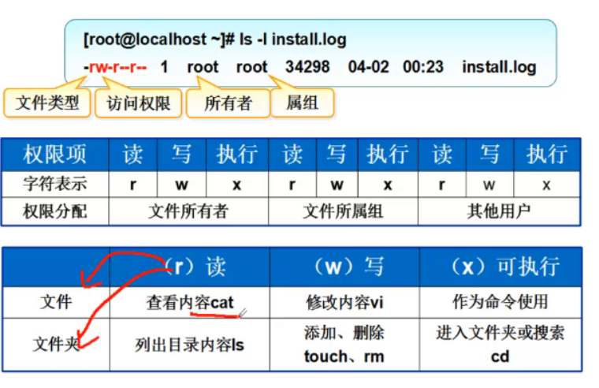
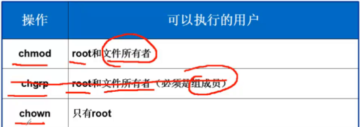
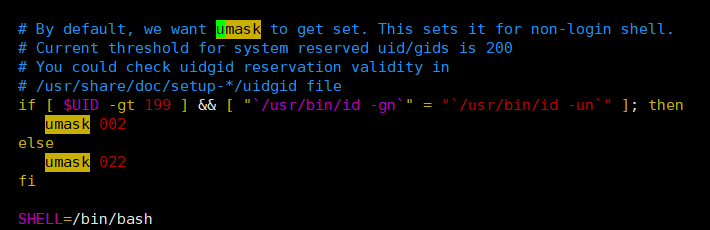
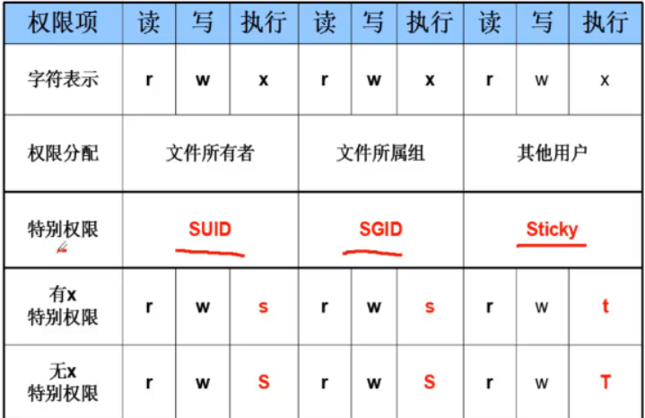
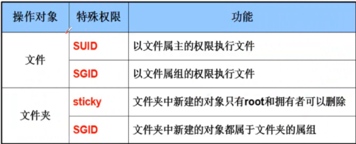
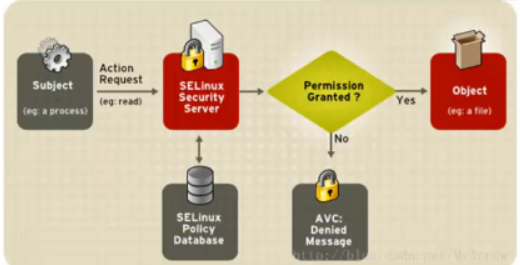

权限引入
为什么需要权限？
- 管控——》资源的分配—–》有安全保障
文件/目录权限以及归属
查看文件/目录权限及归属
访问权限
可读（read）:允许查看文件内容、显示目录列表
文件
1
2
3
4
5
6
7
8
9
10
11
12
13
14[root@localhost lianxi]# cat create_user.sh
#!/bin/bash
#function:create new system user
#author:biubiu
#time:2019-104
#mail:biubiu34@126.com
for i in {1..5}
do
useradd -d /cali/cali$i cali$i
echo "123456cali"|passwd cali$i --stdin &>/dev/null
echo “create cali$i ok”
done
[root@localhost lianxi]#
文件夹
1
2
3[root@localhost lianxi]# ls biu/
biubiu
[root@localhost lianxi]#
可写（wirte）：运行修改文件内容，允许在目录中新建、移动、删除文件或是子目录
对文件
1
[root@localhost lianxi]# vim create_user.sh
对文件夹
1
2
3
4
5
6[root@localhost biu]# ls
biubiu cali
[root@localhost biu]# mv cali/ califeng
[root@localhost biu]# ls
biubiu califeng
[root@localhost biu]#
可执行（execute）：允许运行程序、切换目录
对文件
1
2
3
4
5
6
7
8
9
10
11
12
13
14
15
16
17
18
19
20
21
22
23
24[root@localhost lianxi]# ll -a
总用量 16
drwxr-xr-x. 3 root root 111 10月 4 19:15 .
dr-xr-xr-x. 19 root root 250 10月 4 18:20 ..
drwxr-xr-x. 3 root root 36 10月 4 19:17 biu
-rw-r--r--. 1 root root 238 10月 4 18:35 create_user.sh
-rw-r--r--. 1 root root 342 10月 4 18:40 create_user_v2.sh
-rw-r--r--. 1 root root 500 10月 4 18:53 create_user_v3.sh
-rw-r--r--. 1 root root 57 10月 4 18:18 delete_user.sh
[root@localhost lianxi]# chmod +x create_user.sh
[root@localhost lianxi]# ll
总用量 16
drwxr-xr-x. 3 root root 36 10月 4 19:17 biu
-rwxr-xr-x. 1 root root 238 10月 4 18:35 create_user.sh
-rw-r--r--. 1 root root 342 10月 4 18:40 create_user_v2.sh
-rw-r--r--. 1 root root 500 10月 4 18:53 create_user_v3.sh
-rw-r--r--. 1 root root 57 10月 4 18:18 delete_user.sh
[root@localhost lianxi]# ./create_user.sh
“create cali1 ok”
“create cali2 ok”
“create cali3 ok”
“create cali4 ok”
“create cali5 ok”
[root@localhost lianxi]#
对目录
1
2
3
4
5
6
7
8
9
10
11
12
13
14
15
16
17
18
19
20
21
22
23
24
25
26
27[root@localhost lianxi]# cd biu/
[root@localhost biu]# pwd
/lianxi/biu
[root@localhost biu]# cd ..
[root@localhost lianxi]# chmod -x biu/
[root@localhost lianxi]# ll
总用量 16
drw-r--r--. 3 root root 36 10月 4 19:17 biu
-rwxr-xr-x. 1 root root 238 10月 4 18:35 create_user.sh
-rw-r--r--. 1 root root 342 10月 4 18:40 create_user_v2.sh
-rw-r--r--. 1 root root 500 10月 4 18:53 create_user_v3.sh
-rw-r--r--. 1 root root 57 10月 4 18:18 delete_user.sh
#因为是root用户所以还是可以切换目录
[root@localhost lianxi]# cd biu/
[root@localhost biu]#
#切换到biubiu1普通用户之后，就没有权限进入biu文件夹了
[biubiu1@localhost lianxi]$ ll
总用量 16
drw-r--r--. 3 root root 36 10月 4 19:17 biu
-rwxr-xr-x. 1 root root 238 10月 4 18:35 create_user.sh
-rw-r--r--. 1 root root 342 10月 4 18:40 create_user_v2.sh
-rw-r--r--. 1 root root 500 10月 4 18:53 create_user_v3.sh
-rw-r--r--. 1 root root 57 10月 4 18:18 delete_user.sh
[biubiu1@localhost lianxi]$ cd biu/
-bash: cd: biu/: 权限不够
[biubiu1@localhost lianxi]$
归属（所有权）
- 文件拥有者（user）:拥有该文件或目录的用户账号
- 属组（group）:拥有该文件或目录的组账号
- 其他人（others）:除了拥有者和属组的其他人
使用ll命令对文件/文件夹的解读
1
2
3[root@localhost lianxi]# ll
total 16
d------r--. 3 root root 36 Oct 4 19:17 biu字段
- 字段1：文件的类型是什么
- d ,-,b ,c
- 字段2-4：文件拥有者的权限
- r
- w
- x
- -：没有权限
- 字段5-7：属组的权限
- 字段8-10：其他人的权限
- 字段1：文件的类型是什么

设置文件/目录的权限
设置文件/目录的归属
chown （推荐使用）
必须是root才能用
用户和组必须存在
格式
- chown 文件所有者 文件
- chown :属组 文件
- chown 文件所有者:属组 文件
1
2
3
4
5
6
7
8
9[root@localhost lianxi]# chown biubiu1 biu
[root@localhost lianxi]# ll
total 16
d------r--. 3 biubiu1 root 36 Oct 4 19:17 biu
-rwxr-xr-x. 1 root root 238 Oct 4 18:35 create_user.sh
-rw-r--r--. 1 root root 342 Oct 4 18:40 create_user_v2.sh
-rw-r--r--. 1 root root 500 Oct 4 18:53 create_user_v3.sh
-rw-r--r--. 1 root root 57 Oct 4 18:18 delete_user.sh
[root@localhost lianxi]#
chgrp
- 格式： chgrp 属组 文件
- 必须是root 或是文件的所有者
- 必须是新组的成员
- 常用选项
- -R:递归修改制定目录下的所有文件、子目录的权限
总结
- 
默认权限
在内核级别，文件的初始权限为666
在内核级别，文件夹的初始权限777
umask
用umask命令控制默认权限，临时有效
不推荐修改系统默认umask
1
2
3
4
5
6
7
8[root@localhost lianxi]# umask
0022
[root@localhost lianxi]# umask -S
u=rwx,g=rx,o=rx
[root@localhost lianxi]# umask 077
[root@localhost lianxi]# umask
0077
[root@localhost lianxi]#1
2
3
4
5
6
7
8
9
10
11[root@localhost lianxi]# umask
0022
[root@localhost lianxi]# touch hu1
[root@localhost lianxi]# mkdir biubiu1
#root用户新建文件默认权限是644（666-022）
[root@localhost lianxi]# ll hu1
-rw-r--r--. 1 root root 0 Oct 4 20:36 hu1
#root用户新建目录默认权限是755（777-022）
[root@localhost lianxi]# ll |grep biubiu1
drwxr-xr-x. 2 root root 6 Oct 4 20:36 biubiu1
[root@localhost lianxi]#root用户的umask是022,普通用户的umask是002
1
2
3
4
5
6
7
8
9
10
11
12
13
14
15
16
17
18
19
20[root@localhost lianxi]# umask
0022
[root@localhost lianxi]# su biubiu1
[biubiu1@localhost lianxi]$ umask
0002
[biubiu1@localhost lianxi]$
#在普通用户中新建文件夹，权限是775
[biubiu1@localhost ~]$ ll
total 0
drwxrwxr-x. 2 biubiu1 biubiu1 6 Oct 4 20:41 cali
[biubiu1@localhost ~]$
#普通用户新建文件，权限是664
[biubiu1@localhost ~]$ touch hu
[biubiu1@localhost ~]$ ll
total 0
drwxrwxr-x. 2 biubiu1 biubiu1 6 Oct 4 20:41 cali
-rw-rw-r--. 1 biubiu1 biubiu1 0 Oct 4 20:42 hu
[biubiu1@localhost ~]$
在/etc/bashrc文件里规定umask的默认值
- 
文件或目录的隐藏属性
chattr:设置文件的隐藏属性
格式： chattr 【+-=】【ai】文件或目录
常见命令选项
- -R:递归修改
- -a:可以增加文件内容，但不能修改和删除
- -i:锁定保护文件
1
2
3
4
5
6
7
8
9
10
11
12
13[root@localhost biu]# chattr +i /etc/passwd
[root@localhost biu]# useradd hu
useradd: cannot open /etc/passwd
[root@localhost biu]# lsattr /etc/passwd
----i----------- /etc/passwd
[root@localhost biu]#
[root@localhost biu]# lsattr
---------------- ./biubiu
---------------- ./califeng
----i----------- ./hosts
[root@localhost biu]# rm -rf hosts
rm: cannot remove 'hosts': Operation not permitted
[root@localhost biu]#
lsattr：查看文件的隐藏属性
- 格式：lsattr 【Rda】文件或目录
- 常用命令选项
- -R:递归修改
- -d:查看目录
特别权限（UID,SGID,Sticky）

1
2
3
4
5[root@localhost biu]# which passwd
/usr/bin/passwd
[root@localhost biu]# ll /usr/bin/passwd
-rwsr-xr-x. 1 root root 27832 Jun 10 2014 /usr/bin/passwd
[root@localhost biu]#操作对象
- 文件
- SUID：以文件属主（默认情况下，Linux几乎所有的命令都是归root用户所有）的权限执行文件
- 当某个命令具有SUID权限位的时候，普通用户在执行这个命令的时候，就会具有root用户的权限
- 比如，具有SUID权限位，普通用户修改密码的时候，是以root用户的身份去修改密码的，这样可以达到修改/etc/shadow文件里的密码的作用
- 当某个命令具有SUID权限位的时候，普通用户在执行这个命令的时候，就会具有root用户的权限
- SGID：以文件属组的权限执行文件
- SUID：以文件属主（默认情况下，Linux几乎所有的命令都是归root用户所有）的权限执行文件
- 文件夹
- Sticky：文件夹中新建的对象只有root和拥有者可以删除
- SGID:文件夹中新建的对象都属于文件夹的属组
- 
- 文件
SET位权限
- 主要用途
- 为可执行（有x权限的）文件设置，权限字符为“s”
- 其他用户执行该文件时候，将拥有属主或属组用户的权限
- SET位权限类型：
- SUID:表示对属主用户增加SET位权限
- SGID：表示对属组内的用户增加SET位权限
- 主要用途
粘滞位权限（Sticky）
- 主要用途：
- 为公共目录（例如，权限为777的）设置，权限字符为“t”
- 用户不能删除该目录中其他用户的文件
- 应用实例：/tmp,/var/tmp
- 主要用途：
总结：
- 打狗看主人（看所在的上一个文件夹有什么权限）
- 如果对父目录有完全控制（读写执行）的权限，可以对目录下的文件进行删除，但是对父目录下的子目录里的文件就不能进行完全控制了，需要看权限
- 打狗看主人（看所在的上一个文件夹有什么权限）
设置SET位、粘滞位权限
- 使用权限字符
- chmod ug+/-s 可执行文件…
- chmod 0+/-t 目录名
- 使用权限字
- chmod mnnn 可执行文件
- m为4时候，对应SUID,2对应SGID,1对应粘滞位，可叠加
- 使用权限字符
ACL的使用
- ACL:访问控制列表
- 一个文件/目录的访问控制列表，可以针对任意指定的用户/组分配RWX权限
- 设置ACL：setfacl指令
- 格式：setfacl 选项 规则 文件
- 常用选项：
- -m :新增或修改ACL中的规则
- -b:删除所有ACL规则
- -x:删除指定的ACL规则
- 查看ACL：getfacl指令
- 格式:getfacl 文件
- 常用规则
- 格式：类型:特定的用户或组:权限
- user:(uid/name):(perms) 指定某位使用者的权限
- group:(gid/name):(perms) 指定某一群组的权限
- other::(perms) 指定其他使用者的权限
- mask::(perms) 设定有效的最大权限
- 注意
- user、group、other、mask 简写为u,g,o,m
- perms使用rwx
- ACL:访问控制列表
sudo授权
引入
- Linux里root用户的权限最大
- 关机、重启系统、配置IP地址、格式化磁盘、mount等
- 普通用户的权限非常小
- 如何给普通用户也具有一定的权限？
- 给root分忧
- 如果能授权，那么是授权给用户还是组？
- Linux里root用户的权限最大
授权
授权文件 ：/etc/sudoers —>授权文件
Sudoers allows particular users to run various commands as
the root user, without needing the root password.This file must be edited with the ‘visudo’ command.
—》直接使用visudo命令打开这个文件/etc/sudoers
授权语法：
- user MACHINE=COMMANDS
用户 机器 命令
哪个用户在哪个机器上可以执行哪些命令
- user MACHINE=COMMANDS
1
2
3
4
5
6
7
8
## Allow root to run any commands anywhere
root ALL=(ALL) ALL
## Allows people in group wheel to run all commands
%wheel ALL=(ALL) ALL
允许wheel组里的所有用户可以执行所有的命令
案例
案例1
授权给单独的用户
1.授权给zhangwuji这个用户能新建用户和删除用户步骤
第1步：授权
1
2
3
4
5
6
7[root@cali lianxi]# useradd zhangwuji
[root@cali ~]# echo 123|passwd zhangwuji --stdin
更改用户 zhangwuji 的密码 。
passwd： 所有的身份验证令牌已经成功更新。
[root@cali ~]#
[root@cali lianxi]# vim /etc/sudoers
zhangwuji ALL=/usr/sbin/useradd 要使用命令的绝对命令第2步：去验证使用
1
2
3[root@cali lianxi]# su - zhangwuji
[zhangwuji@cali ~]$
[zhangwuji@cali ~]$ sudo useradd linghu123 执行授权的命令第3步：查看日志
- sudo 的操作Linux系统都会记录下来
1
2
3
4
5
6
7
8
9
10
11[root@localhost ~]# tailf /var/log/secure
Oct 6 16:00:42 localhost sshd[9806]: Accepted password for root from 192.168.0.14 port 1732 ssh2
Oct 6 16:00:43 localhost sshd[9806]: pam_unix(sshd:session): session opened for user root by (uid=0)
Oct 6 16:00:51 localhost su: pam_unix(su:session): session opened for user zhangwuji by root(uid=0)
Oct 6 16:01:16 localhost sudo: zhangwuji : command not allowed ; TTY=pts/0 ; PWD=/root ; USER=root ; COMMAND=/sbin/useradd linghu123
Oct 6 16:01:51 localhost su: pam_unix(su:session): session closed for user zhangwuji
Oct 6 16:02:48 localhost su: pam_unix(su:session): session opened for user zhangwuji by root(uid=0)
Oct 6 16:03:08 localhost sudo: zhangwuji : TTY=pts/0 ; PWD=/root ; USER=root ; COMMAND=/sbin/useradd linghu123
Oct 6 16:03:08 localhost useradd[9884]: new group: name=linghu123, GID=1048
Oct 6 16:03:08 localhost useradd[9884]: new user: name=linghu123, UID=1048, GID=1048, home=/home/linghu123, shell=/bin/bash
Oct 6 16:03:47 localhost su: pam_unix(su:session): session closed for user zhangwuji第4步：授权可以删除用户
1
zhangwuji ALL=/usr/sbin/useradd,/usr/sbin/userdel
案例2
授权给组，组就是linux系统里的组（/etc/group）
步骤
第1步：新建用户和组，并将用户加入到华山组
1
2
3
4
5
6
7
8
9
10
11
12
13
14
15[root@cali lianxi]# groupadd huashan
[root@cali lianxi]# useradd -g huashan linghu
[root@cali lianxi]# useradd -g huashan pingzhi
[root@cali lianxi]# id pingzhi
uid=8966(pingzhi) gid=10003(huashan) 组=10003(huashan)
[root@cali lianxi]# id linghu
uid=8956(linghu) gid=10003(huashan) 组=10003(huashan)
[root@cali lianxi]#
[root@cali lianxi]# echo 123|passwd linghu --stdin
更改用户 linghu 的密码 。
passwd： 所有的身份验证令牌已经成功更新。
[root@cali lianxi]# echo 123|passwd pingzhi --stdin
更改用户 pingzhi 的密码 。
passwd： 所有的身份验证令牌已经成功更新。
[root@cali lianxi]#
第2步：修改/ect/pingzhi
1
2[root@cali lianxi]# vim /etc/sudoers 授权组huashan可以使用ip命令
%huashan ALL=/sbin/ip第3步：登录pingzhi用户去验证
1
2
3
4
5
6
7
8
9
10
11
12
13
14
15
16
17
18
19
20
21
22
23
24
25
26
27
28
29
30
31
32
33
34
35
36
37[root@cali lianxi]# su - pingzhi 登录去验证
[pingzhi@cali ~]$ id
uid=8966(pingzhi) gid=10003(huashan) 组=10003(huashan) 环境=unconfined_u:unconfined_r:unconfined_t:s0-s0:c0.c1023
[pingzhi@cali ~]$
[pingzhi@cali ~]$ sudo ip add add 182.1.1.1/24 dev eth0 执行授权的命令
[sudo] password for pingzhi:
[pingzhi@cali ~]$
[pingzhi@cali ~]$ ip add 查看效果
1: lo: <LOOPBACK,UP,LOWER_UP> mtu 16436 qdisc noqueue state UNKNOWN
link/loopback 00:00:00:00:00:00 brd 00:00:00:00:00:00
inet 127.0.0.1/8 scope host lo
inet6 ::1/128 scope host
valid_lft forever preferred_lft forever
2: eth0: <BROADCAST,MULTICAST,UP,LOWER_UP> mtu 1500 qdisc pfifo_fast state UP qlen 1000
link/ether 00:0c:29:bd:c3:68 brd ff:ff:ff:ff:ff:ff
inet 192.168.20.29/24 brd 192.168.20.255 scope global eth0
inet 182.1.1.1/24 scope global eth0
inet6 fe80::20c:29 ff:febd:c368/64 scope link
valid_lft forever preferred_lft forever
[pingzhi@cali ~]$
[root@cali lianxi]# su - linghu
[linghu@cali ~]$ sudo ip add add 193.1.1.1/24 dev eth0
[sudo] password for linghu:
[linghu@cali ~]$ ip add
1: lo: <LOOPBACK,UP,LOWER_UP> mtu 16436 qdisc noqueue state UNKNOWN
link/loopback 00:00:00:00:00:00 brd 00:00:00:00:00:00
inet 127.0.0.1/8 scope host lo
inet6 ::1/128 scope host
valid_lft forever preferred_lft forever
2: eth0: <BROADCAST,MULTICAST,UP,LOWER_UP> mtu 1500 qdisc pfifo_fast state UP qlen 1000
link/ether 00:0c:29:bd:c3:68 brd ff:ff:ff:ff:ff:ff
inet 192.168.20.29/24 brd 192.168.20.255 scope global eth0
inet 182.1.1.1/24 scope global eth0
inet 193.1.1.1/24 scope global eth0
inet6 fe80::20c:29ff:febd:c368/64 scope link
valid_lft forever preferred_lft forever
[linghu@cali ~]$
SElinux
介绍
selinux是什么？有什么用？
SELinux是一个linux系统里的一个安全方面的子系统，用来提升linux的整体的安全级别。是一种访问控制体系，进程只能访问那些在他的任务中所需要文件。（控制进程可以访问哪些允许访问的资源）
SELinux这套安全子系统默认情况下就有，而且是开启执行的
操作系统有两类访问控制：自主访问控制（DAC）和强制访问控制（MAC）
标准Linux安全是一种DAC，SELinux为Linux增加了一个灵活的和可配置的MAC
内核（kernel）的作用：
1.对cpu调度进行管理 2.对内存进行分配管理 3.对文件系统进行管理 4.对进程进行管理如何查看selinux是否开启
getenforce —-查看selinux的状态
1
[root@localhost ~]# getenforce
如何关闭和开启selinux
临时
setenforce
1
2
3
4[root@localhost ~]# setenforce 0
[root@localhost ~]# getenforce
Permissive
[root@localhost ~]#1
2
3
4[root@localhost ~]# setenforce 1
[root@localhost ~]# getenforce
Enforcing
[root@localhost ~]#
永久
修改配置文件
vim /etc/selinux/config
1
2
3
4
5
6
7
8
9
10
11
12# This file controls the state of SELinux on the system.
# SELINUX= can take one of these three values:
# enforcing - SELinux security policy is enforced. 强制执行selinux安全策略
# permissive - SELinux prints warnings instead of enforcing. 宽容模式（运行进程做事情，但是给与警告，并且会记录下来）
# disabled - No SELinux policy is loaded. 不加载安全策略--》selinux失效
SELINUX=enforcing
# SELINUXTYPE= can take one of three two values:
# targeted - Targeted processes are protected,
# minimum - Modification of targeted policy. Only selected processes are protected.
# mls - Multi Level Security protection.
SELINUXTYPE=targeted重新启动后生效 reboot
vim /etc/sysconfig/selinux
1
2
3[root@localhost ~]# ll /etc/sysconfig/selinux
lrwxrwxrwx. 1 root root 17 7月 4 18:35 /etc/sysconfig/selinux -> ../selinux/config
[root@localhost ~]#
selinux怎么影响正常使用
ftp服务是文件服务，将大量的文件存放在服务器里，开启ftp服务，让大家可以访问、下载
在开启selinux的情况下
vsftpd —–>开启
mount 光盘到/var/ftp/iso —–>不行复制光盘里的内容到Linux系统
1
2
3[root@localhost ftp]# ll -Z
drwxr-xr-x. root root system_u:object_r:iso9660_t:s0 iso
drwxr-xr-x. root root system_u:object_r:public_content_t:s0 pub
然后让ftp用户去访问，验 证是否可以访问？

httpd,mysqld等—-》建议将selinux关闭
某些服务出现奇怪的现象 —–》建议检查selinux是否开启